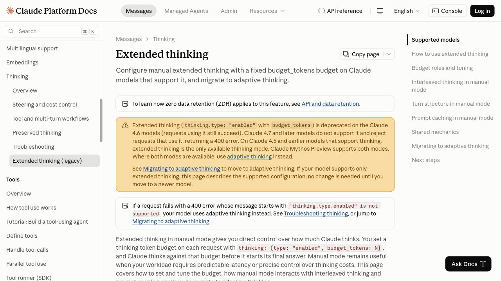

H ace dos años la decisión era qué modelo usar. Hoy, con el mismo modelo, puedes pedirle que conteste al instante o que se tome su tiempo, y la diferencia en la factura llega a ser de varias veces. El problema es que el mando que controla eso está mal explicado en casi todas partes: se vende como «calidad» cuando lo que compras es una cantidad de texto invisible.
Esta guía va de ese mando. Qué es exactamente lo que pasa cuando un modelo «razona», cuánto cuesta, cómo se llama en cada proveedor, en qué tareas rinde y en cuáles estás pagando de más. Todo lo que sigue sobre parámetros y facturación está sacado de la documentación oficial de Anthropic, OpenAI y Google, que es la única fuente que se actualiza al mismo ritmo que los productos.
1. Qué significa que un modelo «piense»
Conviene quitarle el misterio de encima. Cuando un modelo «razona» no está haciendo algo distinto de lo que hace siempre: sigue generando texto, palabra a palabra. La única diferencia es que una parte de ese texto no te la muestra. Antes de escribir la respuesta que lees, escribe para sí mismo un borrador —plantea el problema, prueba un camino, lo descarta, recalcula— y solo después redacta lo que te llega.
Eso tiene una consecuencia que explica casi todo lo demás de esta guía: ese borrador invisible se factura. Los tres grandes proveedores lo documentan igual. Anthropic cuenta los thinking tokens como tokens de salida. OpenAI dice literalmente que los tokens de razonamiento «se facturan como tokens de salida» y que además «ocupan espacio en la ventana de contexto» del modelo. Google explica que el precio se calcula «sobre los tokens de pensamiento completos que el modelo necesita generar», aunque a ti solo te devuelva un resumen.
Los tokens de salida son, además, los caros: en casi todas las tarifas cuestan varias veces más que los de entrada. Así que activar el razonamiento no es apretar un botón de «hazlo mejor»: es aceptar pagar la tarifa más alta por un texto que nunca vas a leer. A veces compensa mucho. Otras veces es dinero tirado. La diferencia no es de opinión, y se puede medir.
Si usas la IA desde la web de ChatGPT, Claude o Gemini y no por API, estos mandos no te aparecen como tales: los tienes escondidos detrás de la elección de modelo o de un modo de «pensar más». La lógica para decidir es la misma, y la última sección la traduce.
2. Lo primero es medir, no decidir
El error más común no es elegir mal el nivel de razonamiento: es no saber cuánto estás gastando en él. Casi nadie lo mira, y los tres proveedores te lo dan en la propia respuesta de la API, con un campo dedicado:
- Anthropic:
usage.output_tokens_details.thinking_tokens, que te dice cuántos de los tokens de salida facturados fueron razonamiento interno. Si vas en streaming, ese desglose aparece solo en el evento final. - OpenAI:
output_tokens_details.reasoning_tokens, dentro del objetousage. - Google:
total_thought_tokens.
Antes de tocar ningún ajuste, pasa tus veinte peticiones más habituales y apunta ese número. Es la única forma de saber si el razonamiento te está costando un 5 % más o el triple. Lo verás en seguida: en una clasificación corta puede ser casi cero, y en una pregunta con varios pasos puede superar con holgura a la respuesta visible.
Si estás montando algo que llama a la IA muchas veces, ese número es el que tienes que vigilar, y conviene ponerle un techo antes de que te lo ponga la factura — lo tratamos en detalle en la guía de límites de gasto para agentes y en cuánto cuesta usar la IA por API.
3. Los mandos, proveedor por proveedor
Cada uno lo llama de otra forma y los nombres han cambiado más de una vez durante 2026. Lo que sigue es lo que dice hoy la documentación de cada uno, que es lo único que conviene creerse.
Anthropic: de un presupuesto fijo a un «esfuerzo»
Durante un tiempo el mando fue un presupuesto de tokens: thinking: {type: "enabled", budget_tokens: N}, con un mínimo de 1.024 tokens y la obligación de que fuera menor que max_tokens. Un detalle que se malinterpreta a menudo: ese presupuesto es un objetivo, no un tope duro — el modelo puede parar bastante antes, y el tope real sigue siendo max_tokens.
Ese modo está en retirada. La documentación de Anthropic lo marca como obsoleto en los modelos 4.6 y avisa de que los 4.7 y posteriores —la generación de Claude Opus 5.5, Sonnet 5 y 5.5, Fable 5.1 y Haiku 5.5— directamente rechazan la petición con un error 400 si usas type: "enabled". El sustituto es el pensamiento adaptativo: thinking: {type: "adaptive"}, y la profundidad se controla con output_config: {effort: ...}.
El cambio no es solo de sintaxis, y esto importa para el bolsillo: con un presupuesto fijo el modelo pensaba en todas las peticiones; en modo adaptativo decide por sí mismo si piensa y cuánto, y con esfuerzos bajos puede no pensar nada en las entradas fáciles. Los valores por defecto no son iguales en toda la familia: Claude Opus 5.5 y Haiku 5.5 arrancan en medium, y el resto de modelos con esfuerzo, en high.
OpenAI: siete niveles y un modo aparte
Aquí el mando es reasoning.effort, y admite none, minimal, low, medium, high, xhigh y max, según el modelo. No todos aceptan todo: GPT-6.1 Sol no admite none ni minimal, y GPT-6 Astra devuelve un error 400 si le pides none. Por defecto, gpt-5.5, GPT-5.6 y GPT-6.1 Sol se quedan en medium.
Hay un segundo mando que se confunde con el primero: reasoning.mode, con valores standard y pro. El modo pro no cambia la tarifa por token, pero la propia documentación advierte de que hace más trabajo y por tanto consume más tokens y cuesta más. Es decir: encarece por volumen, no por precio unitario.
Google: un nivel, y dinámico por defecto
En Gemini el parámetro vive en generation_config y se llama thinking_level, con valores que van de minimal a high según el modelo. Por defecto el pensamiento es dinámico: el modelo ajusta el esfuerzo a la complejidad de lo que le pides. Hay excepciones que conviene conocer antes de elegir modelo: gemini-2.5-flash-lite viene con el pensamiento apagado de serie.
Los nombres cambian cada pocos meses y las tablas de valores por modelo, también. Antes de fijar un ajuste en producción, compruébalo en la documentación del proveedor ese día: es el tipo de detalle que una guía no puede garantizarte al mes siguiente.
4. Dónde se nota de verdad y dónde no
En esto los tres proveedores dicen casi lo mismo, lo cual es inusual y por eso mismo útil. Donde el razonamiento rinde es en problemas con pasos: programación complicada, matemáticas, planificación, flujos de agente que encadenan varias herramientas. Donde no rinde es en tareas de un solo salto: recuperar un dato, clasificar un texto, dar formato a algo, extraer un campo.
OpenAI lo recomienda para «resolución de problemas complejos, programación, razonamiento científico y flujos de trabajo agénticos de varios pasos», y recomienda explícitamente bajar el esfuerzo —o ponerlo en none donde se pueda— en trabajo sensible a la latencia como voz, recuperación rápida de información o clasificación. Google reparte igual: minimal o low para recuperar datos y clasificar, high para programación avanzada, matemáticas o planificación en varios pasos.
La explicación de por qué es así ayuda a decidir mejor que cualquier tabla. Pensar más no hace al modelo más listo en abstracto: le da espacio para detectar sus propios errores a mitad de camino. Si la tarea no tiene camino —si es un salto único— no hay nada que detectar, y el borrador invisible se convierte en relleno que pagas. De ahí que Anthropic hable de rendimientos decrecientes que dependen de la tarea: su consejo es empezar cerca del mínimo de 1.024 tokens en tareas simples y subir poco a poco, y arrancar en 16.000 o más solo en las complejas.
Y una advertencia que encaja con lo que ya contamos en cómo leer un benchmark de IA sin que te engañen: las cifras que las empresas publican con el esfuerzo al máximo son el techo de laboratorio, no lo que vas a ver tú en una tarea normal con el ajuste por defecto. Si alguien te vende un salto enorme de precisión, pregunta primero con qué nivel de razonamiento se midió y cuánto costó esa ejecución.
5. El fallo que te deja pagando por nada
Este merece sección propia porque es caro, silencioso y le pasa a casi todo el mundo una vez. El límite de salida que fijas —max_tokens en Anthropic, max_output_tokens en OpenAI y en Google— no se aplica solo a la respuesta: incluye el razonamiento. Son la misma bolsa.
Qué pasa si el modelo se queda sin sitio mientras piensa: la respuesta se corta antes de empezar a escribir lo visible. OpenAI documenta que en ese caso devuelve status igual a incomplete con motivo max_output_tokens, que puede no contener ninguna salida visible — y que los tokens se pagan igual. Google describe el mismo comportamiento: estado incomplete y los tokens de pensamiento facturados. Has pagado la tarifa más alta por un borrador que nadie va a leer y te has quedado sin respuesta.
Las dos recomendaciones oficiales para evitarlo van en direcciones complementarias:
- Reserva sitio. OpenAI sugiere dejar al menos 25.000 tokens para razonamiento y salida cuando empiezas a experimentar, y ajustar después con los números reales que observes.
- No aprietes el límite para ahorrar. Google lo dice con claridad: para recortar coste o latencia, baja el
thinking_levelen vez de poner unmax_output_tokenspequeño. Bajar el nivel hace que piense menos; apretar el límite solo trunca la respuesta cuando ya has pagado el pensamiento.
En Anthropic el equivalente es la regla de que el presupuesto sea menor que max_tokens, y un aviso añadido: con presupuestos de pensamiento por encima de 32.000 tokens recomiendan usar procesamiento por lotes, porque las peticiones se alargan tanto que chocan con tiempos de espera y límites de conexión abierta. Si alguna vez te ha «caído» una petición larga sin error claro, ahí tienes un sospechoso.
6. No estás viendo lo que ha pensado
Aquí hay un malentendido que conviene cortar, porque afecta a cómo usas lo que te devuelve. Lo que ves cuando activas la visualización del razonamiento no es el razonamiento: es un resumen.
Anthropic devuelve bloques de pensamiento resumidos. OpenAI dice directamente que los tokens de razonamiento no son visibles a través de la API y que puedes pedir un resumen con reasoning.summary en auto. Google lo llama thinking_summaries, también en auto, y añade un detalle revelador: el resumen puede venir vacío o no venir. Pagas el pensamiento completo y lees una versión abreviada que el propio modelo ha redactado.
La consecuencia práctica es la que importa: ese resumen no es una pista de auditoría. No sirve para justificar ante nadie por qué el sistema decidió lo que decidió, porque no es el registro de lo que pasó, es un texto generado sobre lo que pasó. Si necesitas trazabilidad real —en una decisión médica, laboral, crediticia o legal— la trazabilidad tiene que venir de los datos y las herramientas que consultó, no de su narración. Es la misma distinción que explicamos en la guía de grounding.
Y un recordatorio incómodo: un modelo que razona sigue pudiendo equivocarse, solo que con un argumentario más convincente detrás. Un razonamiento largo y bien escrito no es prueba de que la conclusión sea correcta — las alucinaciones no desaparecen al pensar más, y en algunos casos lo que mejora es la capacidad de justificar un error.
7. El detalle que te arruina la caché
Si tienes una conversación larga o un sistema con instrucciones fijas, probablemente uses caché de prompt: el proveedor guarda la parte que no cambia y te la cobra mucho más barata en las siguientes peticiones. Hay una interacción entre esa caché y el razonamiento que casi nadie ve venir.
Anthropic lo documenta sin rodeos: cambiar budget_tokens entre peticiones invalida los puntos de caché, porque el valor del presupuesto se escribe dentro del propio prompt. Cambiar de modo de pensamiento hace lo mismo. En su ejemplo, una conversación que iba leyendo 1.370 tokens de caché vuelve a crearla entera en cuanto el presupuesto pasa de 4.000 a 8.000 tokens en la tercera petición.
O sea que la idea aparentemente lista de «ajusto el esfuerzo en cada petición según lo difícil que parezca» puede salirte más cara que dejarlo fijo, porque cada cambio te tira la caché. La recomendación de la propia documentación es la sencilla: elige un nivel y mantenlo durante la vida de una conversación en caché. Si de verdad necesitas dos niveles, separa los dos tipos de petición en dos flujos distintos, cada uno con su nivel estable, en vez de alternarlos sobre la misma conversación.
8. Cómo decidirlo, en la práctica
Resumido en un procedimiento que puedes seguir esta tarde:
- Empieza abajo. Pon el razonamiento en el nivel más bajo que admita tu modelo y mide la calidad con tus casos reales, no con ejemplos de demostración.
- Mide lo que cuesta. Apunta los tokens de pensamiento de cada petición con el campo que te da tu proveedor. Sin ese número estás decidiendo a ciegas.
- Sube solo donde falle por razonar mal. Si el fallo es que le falta un dato, el razonamiento no lo arregla: lo arregla darle la fuente. Si el fallo es que se salta un paso o se contradice, ahí sí sube el nivel.
- Reserva sitio. Deja margen de salida suficiente para el pensamiento y la respuesta juntos, y comprueba que no te están llegando respuestas incompletas que pagas enteras.
- Fija el nivel y no lo toques dentro de una misma conversación en caché. Si necesitas dos, dos flujos.
- Revísalo cuando cambies de modelo. Los valores por defecto no se heredan: ya has visto que dentro de una misma familia unos arrancan en
mediumy otros enhigh, y que algunos rechazan niveles que otros aceptan.
Y la traducción para quien no toca la API, que es la mayoría. En las aplicaciones web no eliges un número: eliges un modelo o un modo de «pensar más». La regla es equivalente y más simple de lo que parece — usa el modo de razonamiento cuando le pidas algo con pasos (un cálculo encadenado, revisar un documento largo buscando contradicciones, planificar algo con restricciones) y no lo uses para redactar, resumir, traducir o buscar un dato, donde vas a esperar más para lo mismo. Si dudas de qué herramienta usar para empezar, está desarrollado en la comparación de ChatGPT, Claude y Gemini.
Por último, una cosa que el razonamiento no resuelve: si tu problema es que el modelo pierde el hilo de una conversación larga, el ajuste de pensamiento no es el mando correcto — ahí lo que te limita es la ventana de contexto y la memoria, y el razonamiento lo que hace es consumirla más rápido, porque esos tokens también ocupan sitio.
Preguntas frecuentes
En tareas con varios pasos, a menudo sí: le da margen para revisar su propio camino antes de responder. En tareas de un solo paso, no — y a veces es peor, porque alarga la respuesta y la latencia sin mejorar nada. Lo que no hace en ningún caso es eliminar los errores de base: si le falta un dato o la fuente que le has dado es mala, razonar más no lo inventa mejor, lo justifica mejor. Para eso el arreglo es darle la información buena, no subirle el esfuerzo.
Depende por completo de la tarea, y por eso la única respuesta honesta es que lo midas tú. Los tokens de pensamiento se facturan como tokens de salida, que suelen ser los más caros de la tarifa, y el proveedor te dice cuántos has gastado en cada respuesta: Anthropic en usage.output_tokens_details.thinking_tokens, OpenAI en output_tokens_details.reasoning_tokens y Google en total_thought_tokens. Pasa tus veinte peticiones más frecuentes con el razonamiento apagado y encendido, compara esos números y tendrás tu cifra, no una media de internet.
No del todo. Los tres proveedores devuelven un resumen del razonamiento, no el razonamiento literal: Anthropic entrega bloques de pensamiento resumidos, OpenAI dice que los tokens de razonamiento no son visibles por API y ofrece un resumen con reasoning.summary, y Google hace lo mismo con thinking_summaries, avisando además de que el resumen puede venir vacío. Lo importante es la consecuencia: ese texto no vale como registro de auditoría. Si necesitas justificar una decisión, la prueba tiene que estar en los datos y las herramientas que consultó.
No está como tal. En las aplicaciones web no fijas un presupuesto de tokens ni un nivel: eliges un modelo, o un modo que piensa más antes de contestar. El criterio es el mismo que por API — conviene para problemas con pasos (cálculos encadenados, revisar un documento largo buscando incoherencias, planificar con restricciones) y no conviene para redactar, resumir, traducir o buscar un dato, donde solo vas a esperar más. En Gemini, además, el pensamiento es dinámico por defecto en la mayoría de modelos: ajusta el esfuerzo solo.
Es el fallo clásico: el límite de salida que fijaste incluye el razonamiento, no solo la respuesta. Si el modelo agota ese límite mientras piensa, la petición termina sin texto visible y los tokens de pensamiento se facturan igual. OpenAI lo devuelve como status incomplete con motivo max_output_tokens y Google describe el mismo comportamiento. El arreglo no es subir el límite a ciegas: reserva margen suficiente —OpenAI sugiere al menos 25.000 tokens para razonamiento y salida al empezar— y, si lo que quieres es gastar menos, baja el nivel de pensamiento en vez de apretar el límite de salida.
Suele ser el caso donde más se nota, porque un agente encadena pasos y tiene que interpretar lo que le devuelve cada herramienta antes de decidir el siguiente. Los proveedores lo citan expresamente entre los usos recomendados, y existe la variante de pensar entre llamadas a herramientas dentro del mismo turno. Dos advertencias: el coste se multiplica por el número de pasos, no por el número de preguntas que le haces tú, así que mide el gasto por tarea completa y no por petición; y si el agente va a actuar sobre cosas reales, el nivel de razonamiento no sustituye a los permisos ni a los topes de gasto.